Power Seat Motor: Diagrams
Component Connector End Views
Seat Front Vertical Motor - Driver
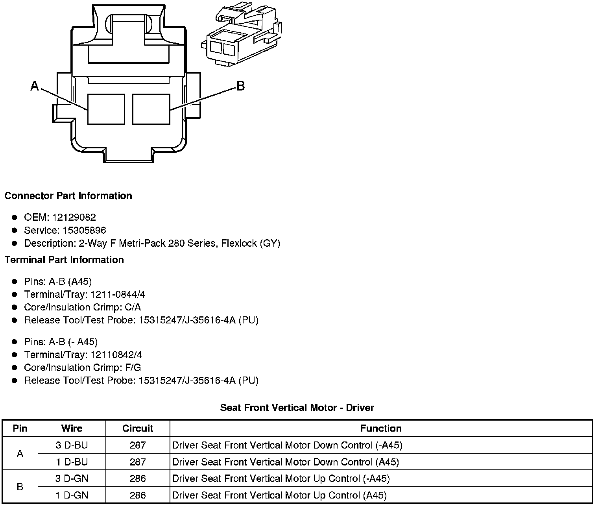
Seat Front Vertical Motor - Passenger
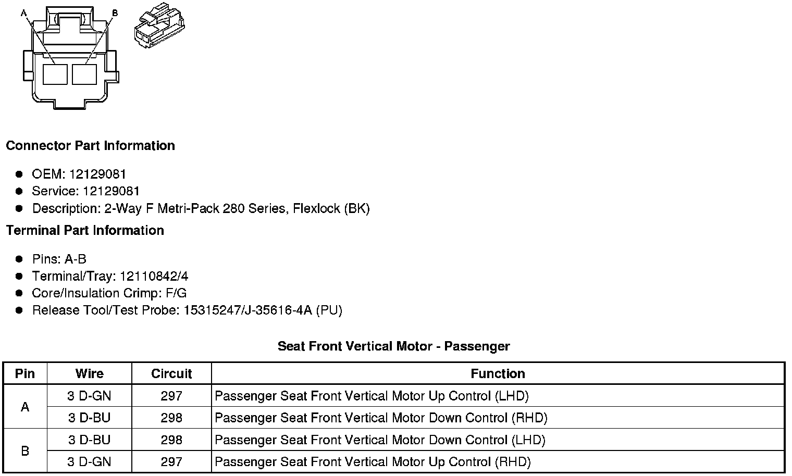
Seat Front Vertical Position Sensor - Driver (A45)
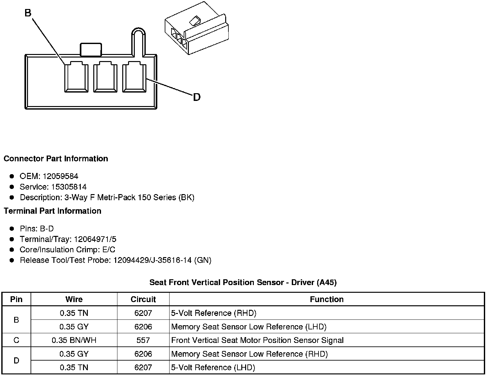
Seat Horizontal Motor - Driver
Seat Horizontal Motor - Passenger
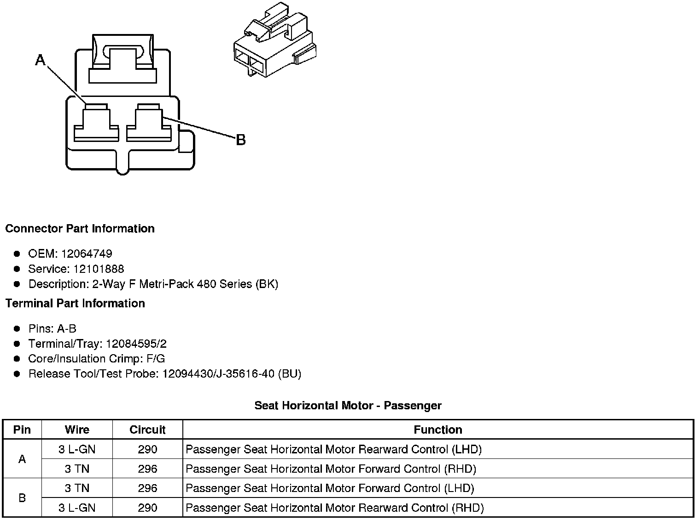
Seat Horizontal Position Sensor - Driver (A45)
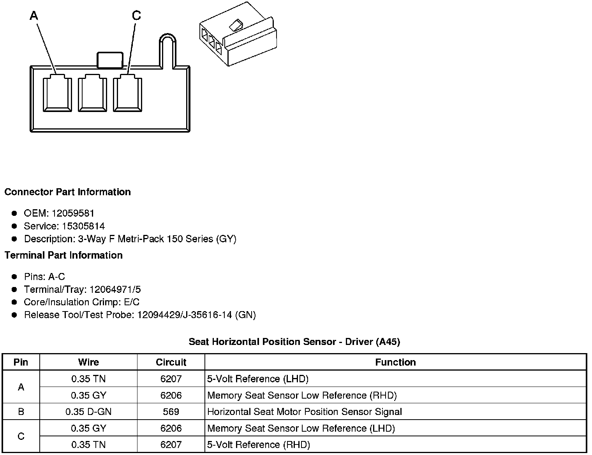
Seat Lumbar Motor - Driver (AL2)
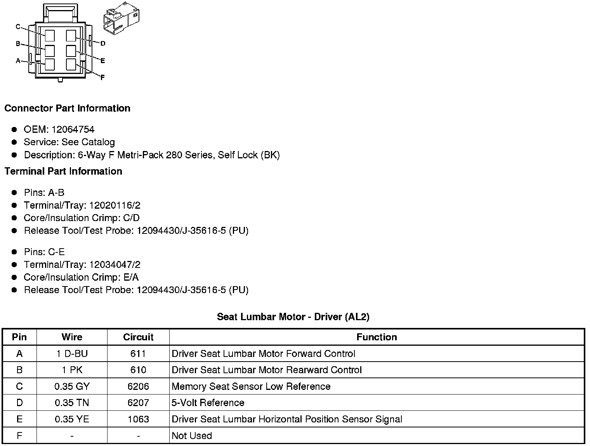
Seat Lumbar Motor - Passenger (AL2)
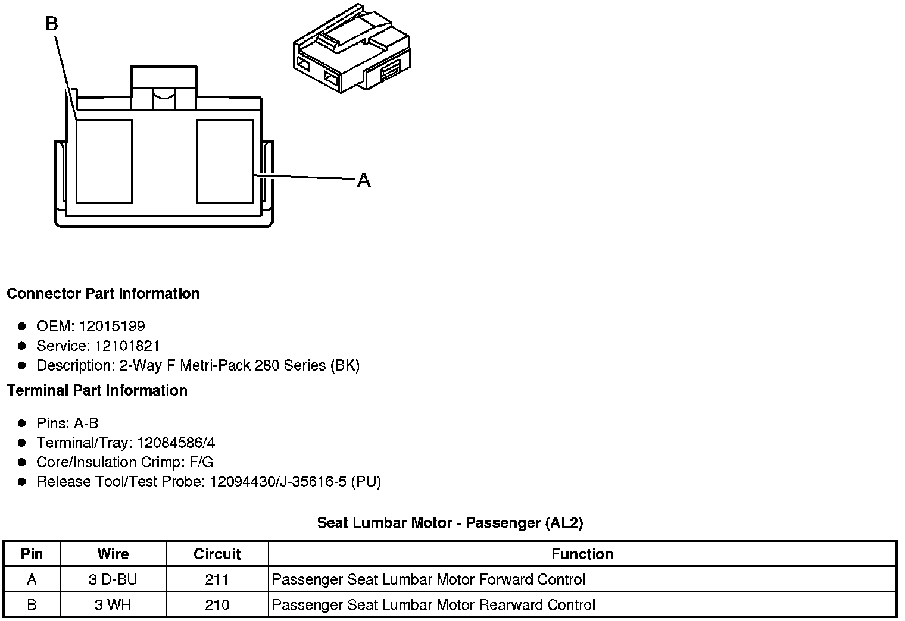
Seat Lumbar Switch - Driver (AL2)

Seat Lumbar Switch - Passenger (AL2)

Seat Rear Vertical Motor - Driver
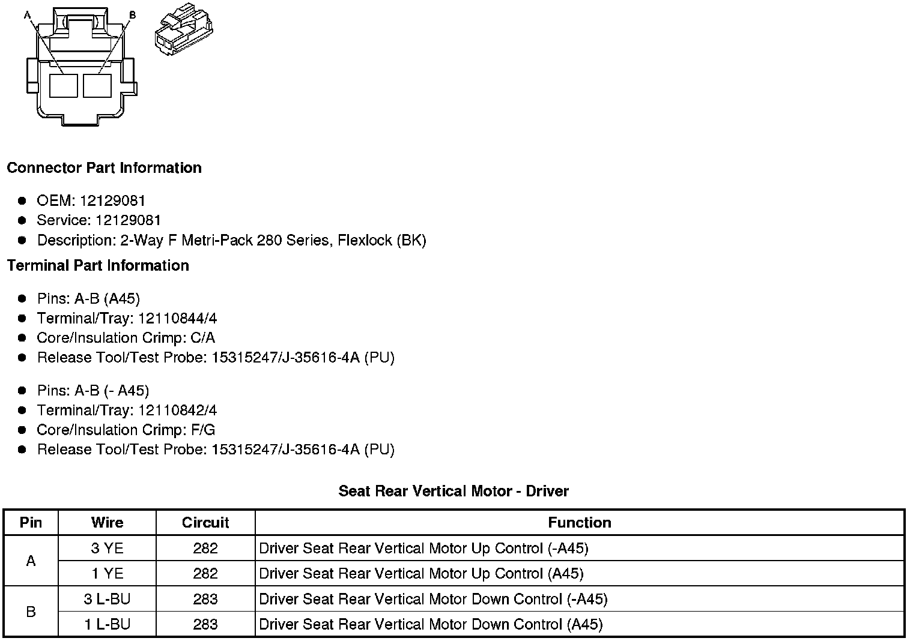
Seat Rear Vertical Motor - Passenger
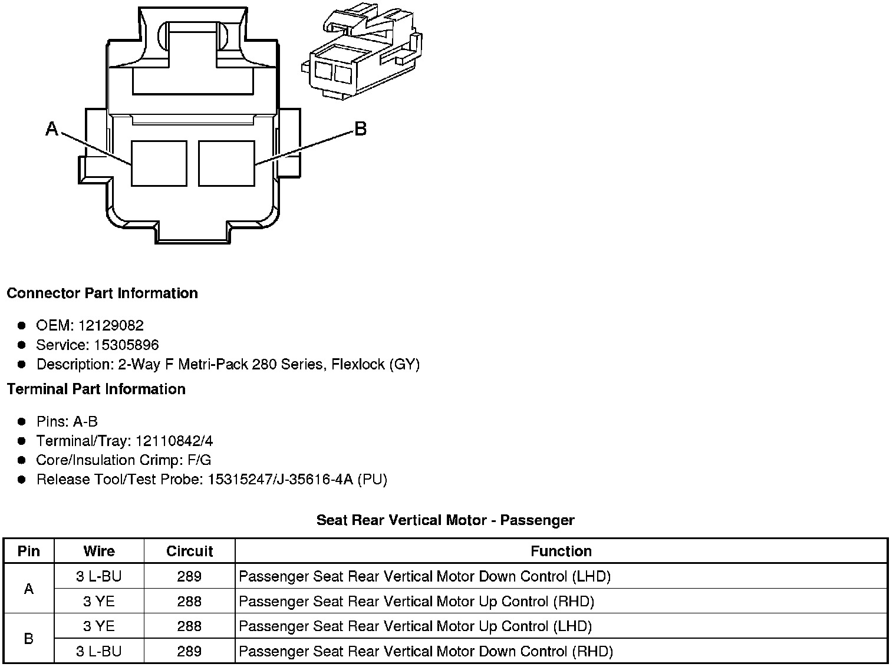
Seat Rear Vertical Position Sensor - Driver (A45)
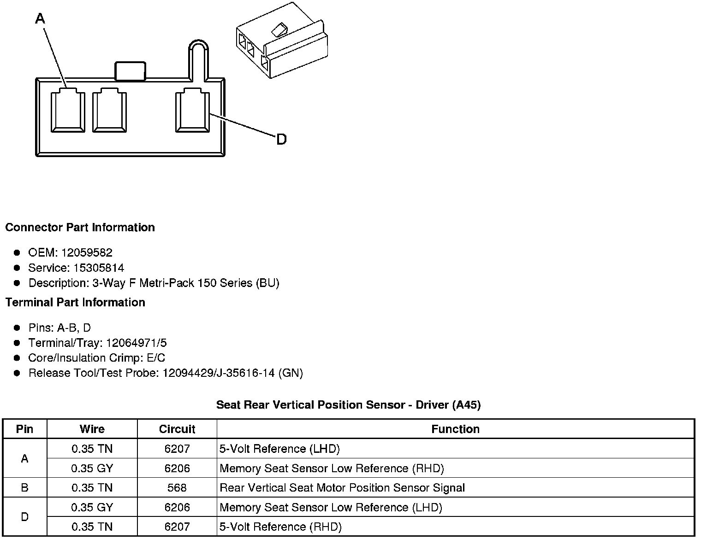
Seat Recline Motor - Driver
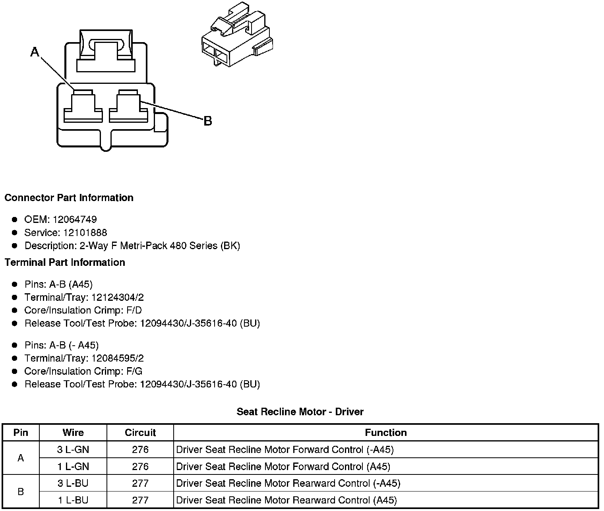
Seat Recline Motor - Passenger
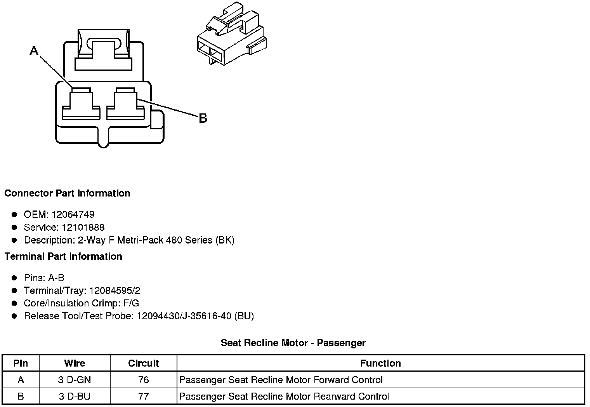
Seat Recline Position Sensor - Driver (A45)
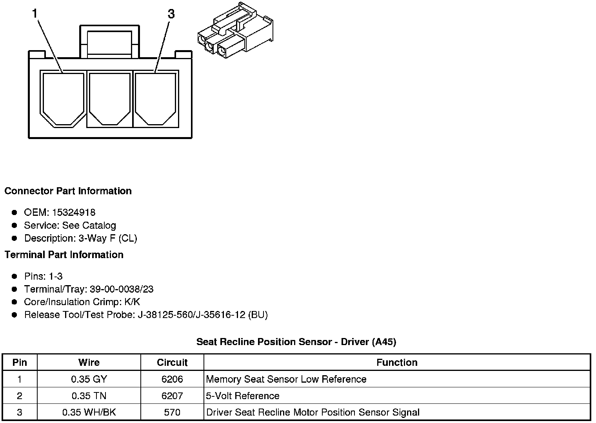